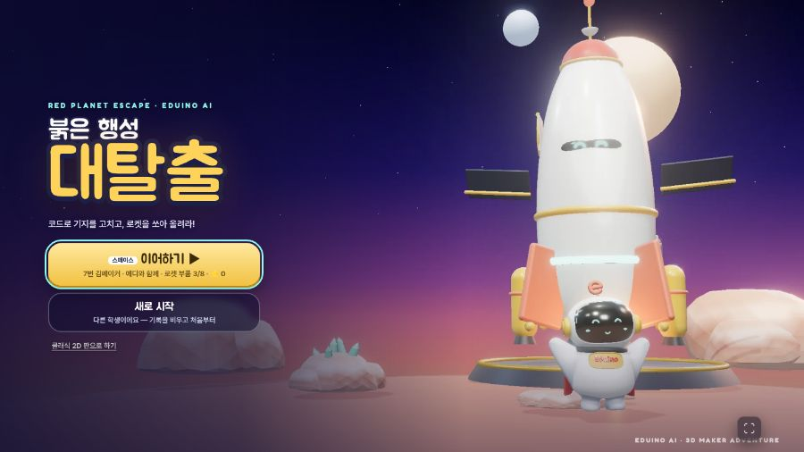
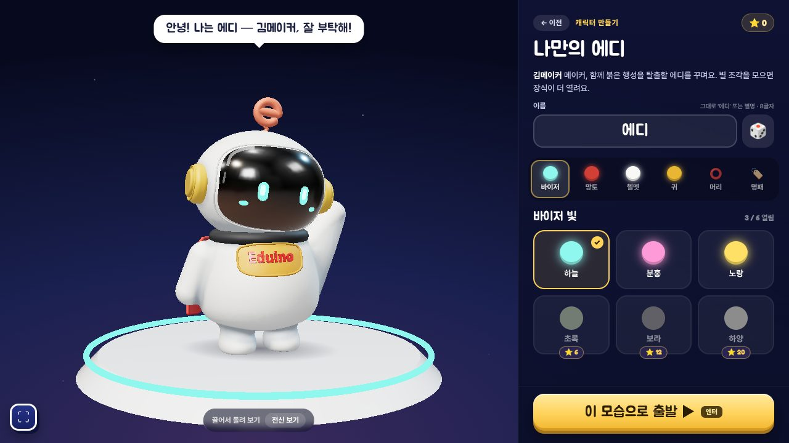
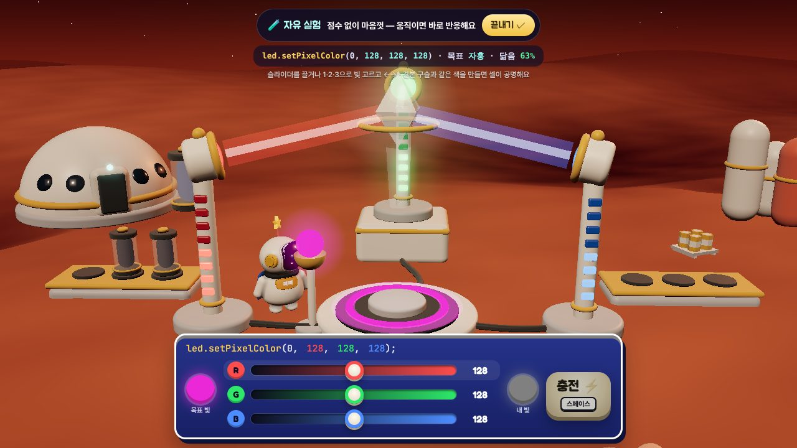
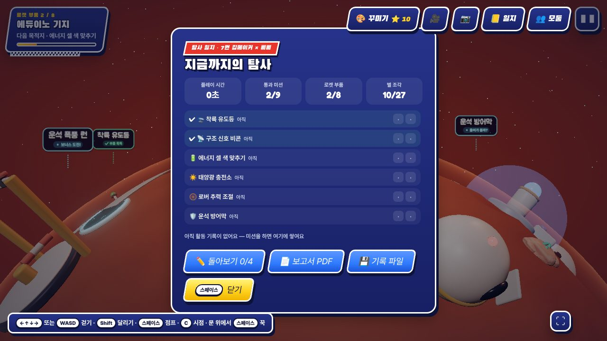
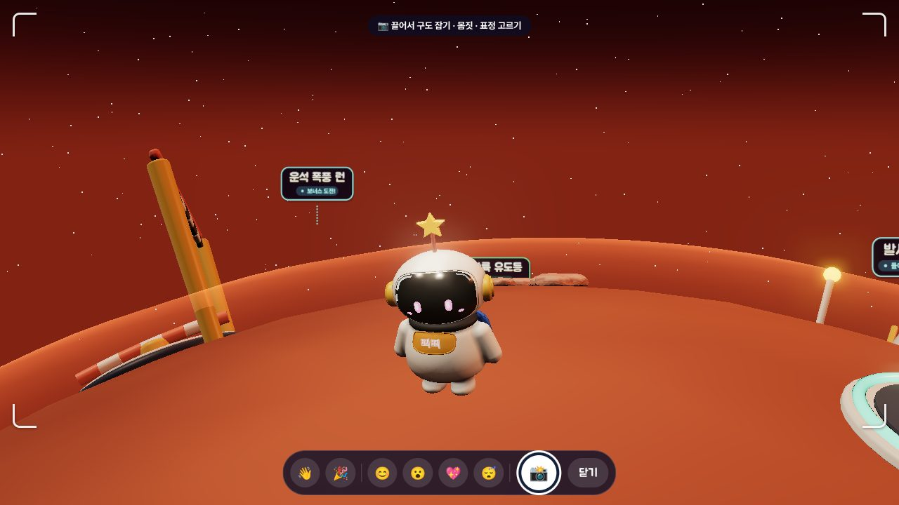
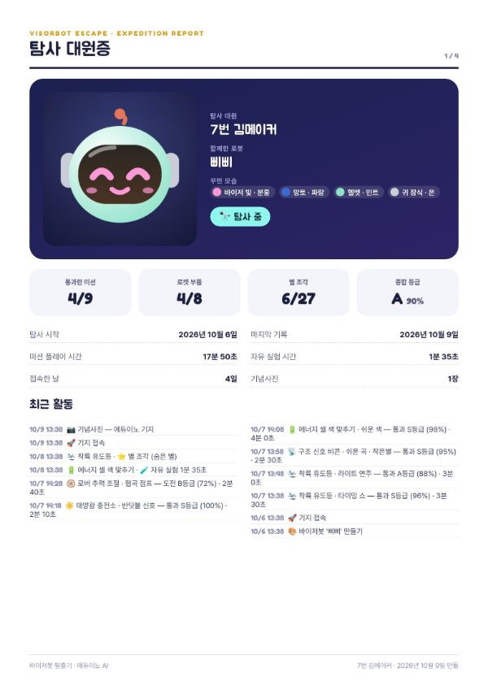
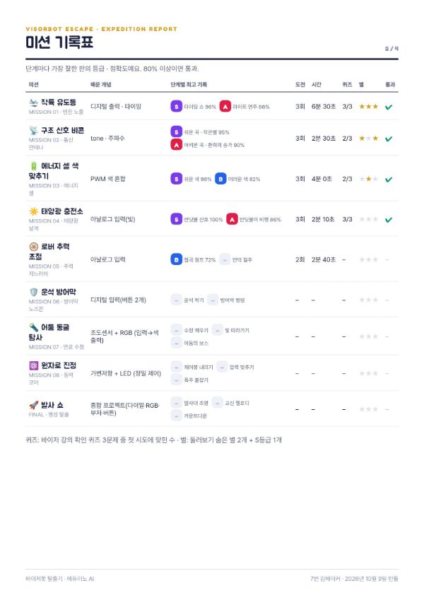
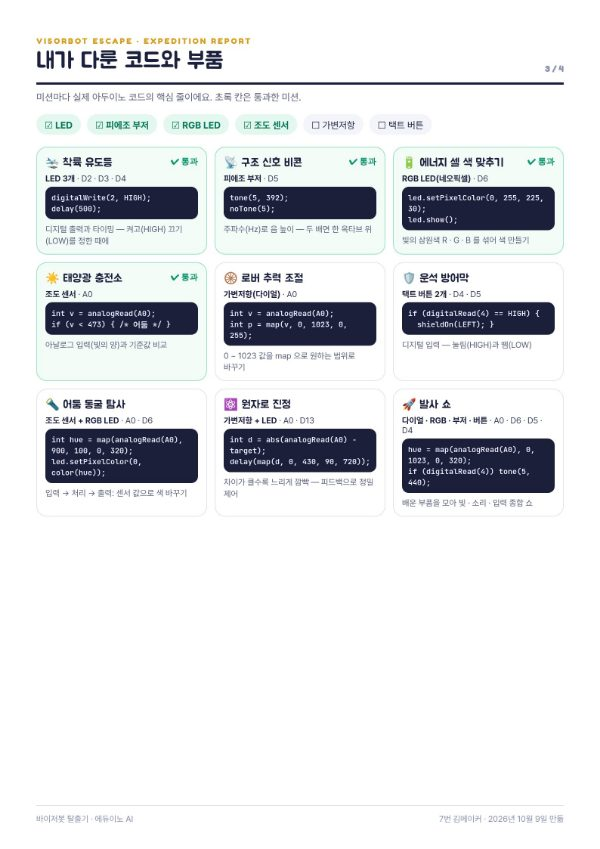
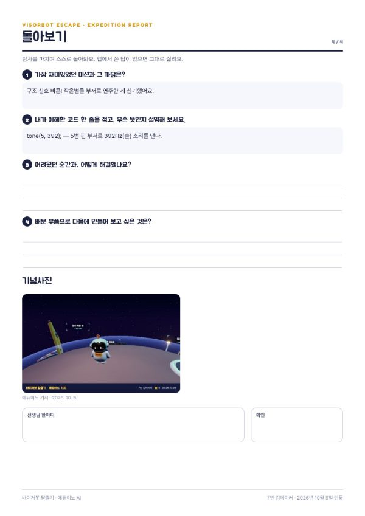

학생은 붉은 행성에 불시착한 에디(에듀이노 대표 캐릭터)와 함께 3D 기지를 돌며 미션 9개를 해결합니다. 미션마다 아두이노 부품 하나(또는 둘)의 원리를 강의 → 퀴즈 → 게임으로 익히고, 통과하면 로켓 부품을 얻습니다. 부품 8개를 모아 마지막 발사 쇼로 행성을 탈출하면, 그동안의 기록이 탐사 보고서 PDF(A4 4쪽)로 정리됩니다.


| 미션 | 배우는 것 | 부품 · 핀 | 얻는 부품 |
|---|---|---|---|
| 🔋 부팅 훈련(프롤로그) | 피지컬 컴퓨팅 개념 · 입력/처리/출력 | — | 출입 카드 |
| 🛬 01 착륙 유도등 | 디지털 출력 · 타이밍(digitalWrite · delay) | LED 3개 · D2 D3 D4 | 엔진 노즐 |
| 📡 02 구조 신호 비콘 | 주파수와 음 높이(tone) | 부저 · D5 | 통신 안테나 |
| 🔋 03 에너지 셀 색 맞추기 | 빛의 삼원색 · 0~255 섞기 | RGB LED · D6 | 에너지 셀 |
| ☀️ 04 태양광 충전소 | 아날로그 입력 · 기준값 if | 조도 센서 · A0 | 태양광 날개 |
| 🛞 05 로버 추력 조절 | 0~1023 · map 으로 범위 바꾸기 | 가변저항 · A0 | 추력 지느러미 |
| 🛡️ 06 운석 방어막 | 디지털 입력 · HIGH/LOW | 버튼 2개 · D4 D5 | 방어막 노즈콘 |
| 🔦 07 어둠 동굴 탐사 | 입력 → 처리 → 출력(센서로 색 바꾸기) | 조도 + RGB · A0 D6 | 연료 수정 |
| ⚛️ 08 원자로 진정 | 피드백 제어 · 차이에 따라 깜빡임 | 가변저항 + LED · A0 D13 | 동력 코어 |
| 🚀 FINAL 발사 쇼 | 종합: 다이얼 · RGB · 부저 · 버튼 | A0 D6 D5 D4 | 행성 탈출 |
?q=low 를 붙이면 처음부터 가벼운 화질로 시작합니다.…/?class 주소로한 번 열면 그 기기에 저장됩니다(해제는 ?class=0). 배경음악 자동 재생 끔(30대가 동시에 틀면 부저 소리를 구분할 수 없어요) · 효과음 절반 · 첫 클릭에 전체화면(다른 탭으로 새는 것 방지).| ✓ | 항목 | 확인할 것 |
|---|---|---|
| ☐ | 아두이노 보드 + USB 케이블 | 데이터 전송 케이블인지(충전 전용 케이블은 포트가 안 보여요) |
| ☐ | LED 3 · 부저 · RGB LED · 조도 센서 · 가변저항 · 버튼 2 | 3장의 핀표대로 미리 꽂아 두면 차시마다 결선 시간이 줄어요 |
| ☐ | 아두이노 IDE · 시리얼 모니터 닫기 | 열려 있으면 포트를 잡고 있어 연결이 안 됩니다 |
| ☐ | 이어폰(선택) | 부저 · 음 높이 미션(02 · 발사 쇼)은 소리를 들어야 해요 |
| ☐ | 보고서 제출 방법 | PDF 를 학급 드라이브 · 과제함에 올리는 경로를 정해 두기 |
게임 안 결선 안내 · 강의 카드 · 탐사 보고서에 나오는 번호와 같습니다. 같은 핀을 여러 미션이 함께 씁니다(A0 = 조도 센서 또는 가변저항 — 미션에 맞게 바꿔 꽂기).
| 부품 | 핀 | 쓰는 미션 | 핵심 코드 |
|---|---|---|---|
| LED 3개(초록 · 노랑 · 빨강) | D2 · D3 · D4 | 01 착륙 유도등 | digitalWrite(2, HIGH); delay(500); |
| 피에조 부저 | D5 | 02 비콘 · 발사 쇼 | tone(5, 392); noTone(5); |
| RGB LED(네오픽셀) | D6 | 03 에너지 셀 · 07 동굴 · 발사 쇼 | led.setPixelColor(0, 255, 225, 30); |
| 조도 센서 | A0 | 04 태양광 · 07 동굴 | int v = analogRead(A0); if (v < 473) … |
| 가변저항(다이얼) | A0 | 05 로버 · 08 원자로 · 발사 쇼 | map(v, 0, 1023, 0, 255) |
| 택트 버튼 2개 | D4 · D5 | 06 방어막 · 발사 쇼(D4) | if (digitalRead(4) == HIGH) … |
| 보드 내장 LED | D13 | 08 원자로 | delay(map(d, 0, 430, 90, 720)); |
모든 미션은 화면의 띠 · 다이얼 · 단추(또는 키보드 ←→ · 1 2 3 · 스페이스)로 끝까지 할 수 있습니다. 보드가 부족하면 2인 1조로 한 명은 보드, 한 명은 화면을 맡게 하고 다음 판에 바꿉니다.
| 차시 | 미션 | 핵심 개념 | 산출물 |
|---|---|---|---|
| 1 | 오리엔테이션 · 에디 꾸미기 · 부팅 훈련 | 피지컬 컴퓨팅 · 입력/처리/출력 · 보드 연결 | 보드 연결 완료 |
| 2 | 01 착륙 유도등 | 디지털 출력 · HIGH/LOW · 타이밍 | 엔진 노즐 |
| 3 | 02 구조 신호 비콘 · 03 에너지 셀 | 주파수 · 빛의 삼원색 · PWM 0~255 | 안테나 · 셀 |
| 4 | 04 태양광 충전소 | 아날로그 입력 0~1023 · 기준값 비교 if | 태양광 날개 |
| 5 | 05 로버 · 06 방어막 | map 으로 범위 바꾸기 · 디지털 입력 | 지느러미 · 노즈콘 |
| 6 | 07 어둠 동굴 탐사 | 입력 → 처리 → 출력 연결 | 연료 수정 |
| 7 | 08 원자로 진정 · 자유 실험 탐구 | 피드백 제어 · 변수 관찰 | 동력 코어 · 활동지 |
| 8 | 발사 쇼 · 탐사 보고서 | 종합 프로젝트 · 돌아보기 · 발표 | 보고서 PDF 제출 |
digitalWrite(2, HIGH); // 켜기 delay(500); // 0.5초 기다리기 digitalWrite(2, LOW); // 끄기
digitalWrite(pin, HIGH/LOW) 와 마지막 명령 뒤 지난 시간(delay)이 위에 보인다tone(5, 392); // 솔(392Hz) led.setPixelColor(0, 255, 225, 30); // 빨강 + 초록 = 노랑 led.show();
int v = analogRead(A0); // 0 ~ 1023
if (v < 473) { /* 어둠 */ } // 기준값보다 작으면 가렸다
analogRead(A0) → v · if (v < 기준) → 참/거짓 — 교실 밝기에 따라 값이 달라짐을 발견int p = map(analogRead(A0), 0, 1023, 0, 255); // 범위 바꾸기
if (digitalRead(4) == HIGH) { shieldOn(LEFT); } // 눌림
int hue = map(analogRead(A0), 900, 100, 0, 320); // 가릴수록 색이 바뀐다 led.setPixelColor(0, color(hue));
int d = abs(analogRead(A0) - target); // 목표와의 차이 delay(map(d, 0, 430, 90, 720)); // 멀수록 느리게 깜빡
| 기능 | 어디서 · 무엇 | 수업에서 쓰는 법 |
|---|---|---|
| 💡 원리 다시 보기 | 단계 설명 창. 바이저 강의 카드 + 확인 퀴즈를 다시 | 막힌 학생에게 먼저 권하기 |
| 🧪 자유 실험 | 단계 설명 창. 점수 · 시간 없이 센서를 마음대로 — 위에 analogRead → map → … 실제 값 | 관찰 · 탐구 활동(활동지 B). 판정 없는 작은 놀이가 있음 |
| 🔭 둘러보기 | 단계 설명 창. 카메라 돌리기 · 땅 눌러 걷기 · 숨은 별 2개 | 먼저 끝낸 학생의 보너스 활동 |
| ⭐ 별 조각 | 미션마다 3개(숨은 별 2 + S등급 1), 모두 27개 | 꾸미기 색이 열림 — 동기 부여 |
| 🎨 꾸미기 | 기지 오른쪽 위. 바이저 빛 · 망토 · 헬멧 · 귀 장식 · 머리 장식(비니 · 고글 · 별 안테나 · 헤드셋 · 탈출 왕관) · 이름 명패 | 쉬는 시간 활동 |
| 📷 기념사진 | 기지 · 모든 결과창. 구도 · 몸짓 · 표정 → 이름 · 날짜 띠 PNG | 최근 사진 2장이 보고서에 실림 |
| 🤝 도우미 모드 | 같은 단계를 2번 연속 못 넘기면 그 단계만 판정 폭 1.3배(에디가 알려 줌) | 기록 · 메달은 그대로 — 낙담 방지 |
| 👁 보기 편하게 | 일시정지 창. 화면 효과 줄이기(흔들림 · 번쩍임) · 색 도우미(색약: 위치 · 숫자 단서) | 광과민 · 색각 이상 학생 배려 |
| 📒 일지 · 💾 기록 파일 | 기지 오른쪽 위. 활동 기록 · 보고서 PDF · 다른 기기로 옮길 파일 | 차시 끝 기록 확인 · 결석생 이어하기 |



단계마다 정확도로 등급을 매기고, 80% 이상이면 통과입니다. 기록은 단계별 가장 잘한 판을 남깁니다.
S 95% 이상 A 85% 이상 B 70% 이상 C 50% 이상 D 그 아래




| 영역 | 잘함 | 보통 | 노력 필요 | 근거 |
|---|---|---|---|---|
| 참여 · 끈기 | 대부분 미션을 여러 번 도전해 통과 | 절반 이상 통과 | 도전이 적음 | 보고서 2쪽 도전 · 시간 |
| 개념 이해 | 퀴즈 첫 시도 대부분 정답, 코드 뜻을 설명 | 힌트 뒤 정답 | 개념 설명이 어려움 | 2쪽 퀴즈 · 4쪽 2번 |
| 탐구 · 설명 | 자유 실험으로 값을 바꿔 결과를 근거와 함께 설명 | 결과는 적었으나 까닭이 약함 | 관찰 기록 없음 | 활동지 B · 1쪽 자유 실험 시간 |
| 성찰 | 어려움과 해결 과정을 구체적으로 | 느낀 점 위주 | 빈칸 | 4쪽 3 · 4번 |
| 화면 문구 · 상황 | 해결 |
|---|---|
| ‘이 브라우저는 WebSerial 을 지원하지 않아요’ | 데스크톱 Chrome · Edge 로 열기. 태블릿은 화면 조작으로 진행 |
| ‘포트를 못 골랐어요’ · 선택창에 포트가 없음 | ① 아두이노 IDE · 시리얼 모니터 닫기 ② 케이블 다시 꽂기(데이터 케이블인지) ③ [보드 연결] 다시 |
| ‘포트가 다른 프로그램이나 다른 탭에서 사용 중’ | 같은 사이트를 연 다른 탭 · IDE 닫고 다시 |
| ‘연결 중 오류가 났어요’ | 케이블을 다시 꽂고 [다시 연결 시도]. 계속되면 다른 USB 포트 |
| 센서 값이 이상함(조도) | 교실 밝기에 따라 달라요 — 자유 실험 판독 줄로 평소 값 확인. 형광등 바로 아래 · 창가는 차이가 큼 |
| 3D 화면이 느림 · 끊김 | 다른 탭 닫기 · 주소 끝 ?q=low. 화질은 기기 따라 자동으로 낮아져요 |
| 소리가 안 남 | 타이틀 오른쪽 위 소리 단추 · 기기 음량. 수업 모드는 배경음악만 꺼져 있어요 |
| 다른 학생 기록이 보임 | 타이틀 ‘새로 시작’(이전 기록을 지우고 이름부터) |
| 결석 · 자리 바꿈 | 원래 PC 에서 📒 일지 → 💾 기록 파일 → 새 PC 타이틀 📂 불러오기 |
| PDF 가 안 받아짐 | 브라우저 다운로드 허용 확인. 파일 이름 red-planet-report-번호-날짜.pdf(다운로드 폴더). 태블릿은 공유 메뉴로 저장 |
| 깜빡임 · 흔들림이 불편 | 일시정지(Esc) → ‘화면 효과 줄이기’ |
| 바꾼 것(입력 값) | 판독 줄에 나온 값 | 장면에서 일어난 일 |
|---|---|---|
강의 카드에서 고른 코드 한 줄을 그대로 적고, 우리말로 풀어 보세요.